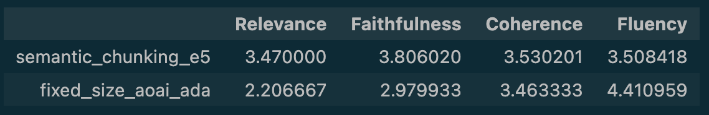

End-to-end evaluation#
Overview#
In this section we will evaluate end-to-end our RAG system using human-centric metrics (Groundedness, Relevance, Coherence, Similarity, Fluency). We will use those metrics to evaluate the baseline approach we started with to the new RAG application which takes into account the conclusions from our previous experiments.
After performing the previous two experiments, we concluded the following:
Based on experiment 3.1, the embedding model with the best score was intfloat/e5-small-v2.
Based on experiment 3.2, the chunking strategy that returned the best results was the semantic chunking.
Generate answers#
In order to evaluate our two systems, we will generate answers for each question in our evaluation dataset. For each question:
We embed the question.
We search for relevant documents in the search index.
We sent to the LLM the question as well as the documents.
We get an answer back.
How good that answer is will be judged from a groundedness, relevance, coherence, similarity and fluency perspective using another LLM as judge.
Note
In the interest of time, we have run the above steps using this helper notebook. The answers were saved as follows:
fixed-size-chunks-180-30-engineering-mlops-ada holds the answers for our baseline RAG system where we used a fixed-size chunking strategy and AOI embedding model.
semantic-chunking-intfloat.json holds the answers for the RAG system where we used semantic chunking and intfloat/e5-small-v2 embedding model.
Human-Centric Metrics#
To generate these metrics, we will take the LLM as Judge approach and will use another LLM as the judge.
We will use MLflow open-source tool, more precisely, the MLflow LLM Evaluate API.
LLM as Judge#
Set the LLM model that you would like to use as judge. Note: This step assumes that you have previously deployed this model in your Azure OpenAI resource group.
judge_model = "openai:/gpt-35-turbo"
Setup#
%%capture --no-display
%run -i ./pre-requisites.ipynb
%run -i ./helpers/search.ipynb
from azureml.core import Workspace
import pandas as pd
import openai
import mlflow
import os
os.environ.setdefault("OPENAI_API_KEY", azure_openai_key)
os.environ.setdefault("OPENAI_API_BASE", azure_aoai_endpoint)
os.environ.setdefault("OPENAI_API_VERSION", "2023-05-15")
os.environ.setdefault("OPENAI_API_TYPE", "azure")
os.environ.setdefault("OPENAI_DEPLOYMENT_NAME", azure_openai_judge)
'chat'
Faithfulness metric#
This metric evaluates how faithful the model’s generated output is to the context provided. High scores mean that the outputs contain information that is in line with the context, while low scores mean that outputs may disagree with the context (input is ignored). It uses Likert scale.
This metric is similar to Groundedness from Azure Machine Learning or Prompt Flow.
from mlflow.metrics.genai import faithfulness, EvaluationExample
# Create a good and bad example for faithfulness in the context of this problem
faithfulness_examples = [
EvaluationExample(
input="How do I disable MLflow autologging?",
output="mlflow.autolog(disable=True) will disable autologging for all functions. In Databricks, autologging is enabled by default. ",
score=2,
justification="The output provides a working solution, using the mlflow.autolog() function that is provided in the context.",
grading_context={
"context": "mlflow.autolog(log_input_examples: bool = False, log_model_signatures: bool = True, log_models: bool = True, log_datasets: bool = True, disable: bool = False, exclusive: bool = False, disable_for_unsupported_versions: bool = False, silent: bool = False, extra_tags: Optional[Dict[str, str]] = None) → None[source] Enables (or disables) and configures autologging for all supported integrations. The parameters are passed to any autologging integrations that support them. See the tracking docs for a list of supported autologging integrations. Note that framework-specific configurations set at any point will take precedence over any configurations set by this function."
},
),
EvaluationExample(
input="How do I disable MLflow autologging?",
output="mlflow.autolog(disable=True) will disable autologging for all functions.",
score=5,
justification="The output provides a solution that is using the mlflow.autolog() function that is provided in the context.",
grading_context={
"context": "mlflow.autolog(log_input_examples: bool = False, log_model_signatures: bool = True, log_models: bool = True, log_datasets: bool = True, disable: bool = False, exclusive: bool = False, disable_for_unsupported_versions: bool = False, silent: bool = False, extra_tags: Optional[Dict[str, str]] = None) → None[source] Enables (or disables) and configures autologging for all supported integrations. The parameters are passed to any autologging integrations that support them. See the tracking docs for a list of supported autologging integrations. Note that framework-specific configurations set at any point will take precedence over any configurations set by this function."
},
),
]
faithfulness_metric = faithfulness(
model=judge_model, examples=faithfulness_examples)
# print(faithfulness_metric)
Relevance metric#
This metric evaluates how relevant the model’s generated output is with respect to both the input and the provided context. High scores mean that the model has understood the context and correct extracted relevant information from the context, while low score mean that output has completely ignored the question and the context and could be hallucinating.
from mlflow.metrics.genai import relevance
relevance_metric = relevance(model=judge_model)
# print(relevance_metric)
Similarity metric#
This metric evaluates how similar the model’s generated output is compared to the information in the ground_truth. High scores mean that your model outputs contain similar information as the ground_truth, while low scores mean that outputs may disagree with the ground_truth.
from mlflow.metrics.genai import answer_similarity
similarity_metric = answer_similarity(model=judge_model)
# print(similarity_metric)
Fluency metric#
There is no pre-defined fluency metric in MLflow. However, we can create custom LLM metrics.
We will define fluency in the exact same way as it is defined in Azure SDK for Python.
Therefore, fluency will measure the quality of individual sentences in the answer, and whether they are well-written and grammatically correct.
fluency_example_1 = mlflow.metrics.genai.EvaluationExample(
input="What did you have for breakfast today?",
output="Breakfast today, me eating cereal and orange juice very good.",
justification="The answer completely lacks fluency",
score=1,
)
fluency_example_2 = mlflow.metrics.genai.EvaluationExample(
input="How do you feel when you travel alone?",
output="Alone travel, nervous, but excited also. I feel adventure and like its time.",
justification="The answer mostly lacks fluency",
score=2,
)
fluency_example_3 = mlflow.metrics.genai.EvaluationExample(
input="When was the last time you went on a family vacation?",
output="Alone travel, nervous, but excited also. I feel adventure and like its time.",
justification="The answer is partially fluent",
score=3,
)
fluency_example_4 = mlflow.metrics.genai.EvaluationExample(
input="What is your favorite thing about your job?",
output="My favorite aspect of my job is the chance to interact with diverse people. I am constantly learning from their experiences and stories.",
justification="The answer is mostly fluent",
score=4,
)
fluency_example_5 = mlflow.metrics.genai.EvaluationExample(
input="Can you describe your morning routine?",
output=(
"Every morning, I wake up at 6 am, drink a glass of water, and do some light stretching."
"After that, I take a shower and get dressed for work. Then, I have a healthy breakfast, "
"usually consisting of oatmeal and fruits, before leaving the house around 7:30 am.",
),
justification="The answer is completely fluent",
score=5,
)
fluency = mlflow.metrics.genai.make_genai_metric(
name="fluency",
definition=(
"Fluency measures the quality of individual sentences in the answer, and whether they are well-written and grammatically correct. "
"Consider the quality of individual sentences when evaluating fluency. "
"Given the question and answer, score the fluency of the answer between one to five stars using the following rating scale:"
),
grading_prompt=(
"One star: the answer completely lacks fluency"
"Two stars: the answer mostly lacks fluency"
"Three stars: the answer is partially fluent"
"Four stars: the answer is mostly fluent"
"Five stars: the answer has perfect fluency"
),
examples=[fluency_example_1, fluency_example_2,
fluency_example_3, fluency_example_4, fluency_example_5],
model=judge_model)
Coherence#
There is no pre-defined coherence metric in MLflow. However, we can create custom LLM metrics.
We will define fluency in the exact same way as it is defined in Azure SDK for Python.
Therefore, coherence of an answer will be measured by how well all the sentences fit together and sound naturally as a whole.
coherence_example_1 = mlflow.metrics.genai.EvaluationExample(
input="What is your favorite indoor activity and why do you enjoy it?",
output="I like pizza. The sun is shining.",
justification="The answer completely lacks fluency",
score=1,
)
coherence_example_2 = mlflow.metrics.genai.EvaluationExample(
input="Can you describe your favorite movie without giving away any spoilers?",
output="It is a science fiction movie. There are dinosaurs. The actors eat cake. People must stop the villain.",
justification="The answer mostly lacks fluency",
score=2,
)
coherence_example_3 = mlflow.metrics.genai.EvaluationExample(
input="What are some benefits of regular exercise?",
output="Regular exercise improves your mood. A good workout also helps you sleep better. Trees are green.",
justification="The answer is partially fluent",
score=3,
)
coherence_example_4 = mlflow.metrics.genai.EvaluationExample(
input="How do you cope with stress in your daily life?",
output="I usually go for a walk to clear my head. Listening to music helps me relax as well. Stress is a part of life, but we can manage it through some activities.",
justification="The answer is mostly fluent",
score=4,
)
coherence_example_5 = mlflow.metrics.genai.EvaluationExample(
input="What can you tell me about climate change and its effects on the environment?",
output=(
"Climate change has far-reaching effects on the environment. "
"Rising temperatures result in the melting of polar ice caps, contributing to sea-level rise. "
"Additionally, more frequent and severe weather events, such as hurricanes and heatwaves, can cause disruption to ecosystems and human societies alike."
),
justification="The answer is completely fluent",
score=5,
)
coherence = mlflow.metrics.genai.make_genai_metric(
name="coherence",
definition=(
"Coherence of an answer is measured by how well all the sentences fit together and sound naturally as a whole. "
"Consider the overall quality of the answer when evaluating coherence. "
"Given the question and answer, score the coherence of answer between one to five stars using the following rating scale:"
),
grading_prompt=(
"One star: the answer completely lacks coherence"
"Two stars: the answer mostly lacks coherence"
"Three stars: the answer is partially coherent"
"Four stars: the answer is mostly coherent"
"Five stars: the answer has perfect coherency"
),
examples=[coherence_example_1, coherence_example_2,
coherence_example_3, coherence_example_4, coherence_example_5],
model=judge_model,
)
Create a job (experiment) in Azure Machine Learning Studio#
%%capture --no-display
%run -i ./pre-requisites.ipynb
!az login
ws = Workspace.get(name=workspace_name,
subscription_id=subscription_id,
resource_group=resource_group_name)
mlflow_tracking_uri = ws.get_mlflow_tracking_uri()
Create an evaluation function
%%capture --no-display
import json
import pandas as pd
def load_dataframe(input_path):
try:
with open(input_path, "r", encoding="utf-8") as file:
qa_evluation_data = json.load(file)
df = pd.DataFrame.from_records(qa_evluation_data)
df["user_prompt"] = df["user_prompt"].astype(str)
df["output_prompt"] = df["output_prompt"].astype(str)
df["retrieved_context"] = df["retrieved_context"].astype(str)
df["generated_output"] = df["generated_output"].astype(str)
return df
except Exception as e:
throw(e)
def evaluate(input_path, experiment_name, run_name):
try:
df = load_dataframe(input_path)
mlflow.set_tracking_uri(ws.get_mlflow_tracking_uri())
mlflow.set_experiment(experiment_name)
with mlflow.start_run(run_name=run_name) as run:
results = mlflow.evaluate(data=df,
predictions="generated_output",
model_type="question-answering",
extra_metrics=[
faithfulness_metric,
relevance_metric,
coherence,
fluency,
# similarity_metric,
],
evaluator_config={
"col_mapping": {
"inputs": "user_prompt", # Define the column name for the input
"context": "retrieved_context", # Define the column name for the context
# "targets": "output_prompt"
}
})
return results
except Exception as e:
print(e)
1. Evaluate the baseline RAG solution#
The data is found at fixed-size-chunks-180-30-engineering-mlops-ada.json
🔍 Code:
experiment_name = "fixed-size-180-30-ada-4" # TODO: Change this to a unique name
mlflow.create_experiment(experiment_name)
input_path = "./output/qa/results/fixed-size-chunks-180-30-engineering-mlops-ada.json"
run_name = "metrics" #TODO: Change this to the name of the run
results_fixed_size_ada = evaluate(input_path, experiment_name, run_name)
print(results_fixed_size_ada.metrics)
Go to https://ml.azure.com/:
Open the workspace
Go to Jobs
Find the experiment with name
experiment_nameto see the results
2. Evaluate the new RAG solution#
The data is found at semantic-chunking-intfloat.json
🔍 Code:
%%capture --no-display
experiment_name = "semantic-chunking-intfloat-e5-small-v2" # TODO: Change this to a unique name
mlflow.create_experiment(experiment_name)
input_path = "./output/qa/results/semantic-chunking-intfloat.json"
run_name = "metrics" # TODO: Change this to the name of the run
results_semantic_chunking = evaluate(input_path, experiment_name, run_name)
print(results_semantic_chunking.metrics)
💡 Conclusions#
Take few moments to analyse the results.
🔍 Pre-calculated results:
